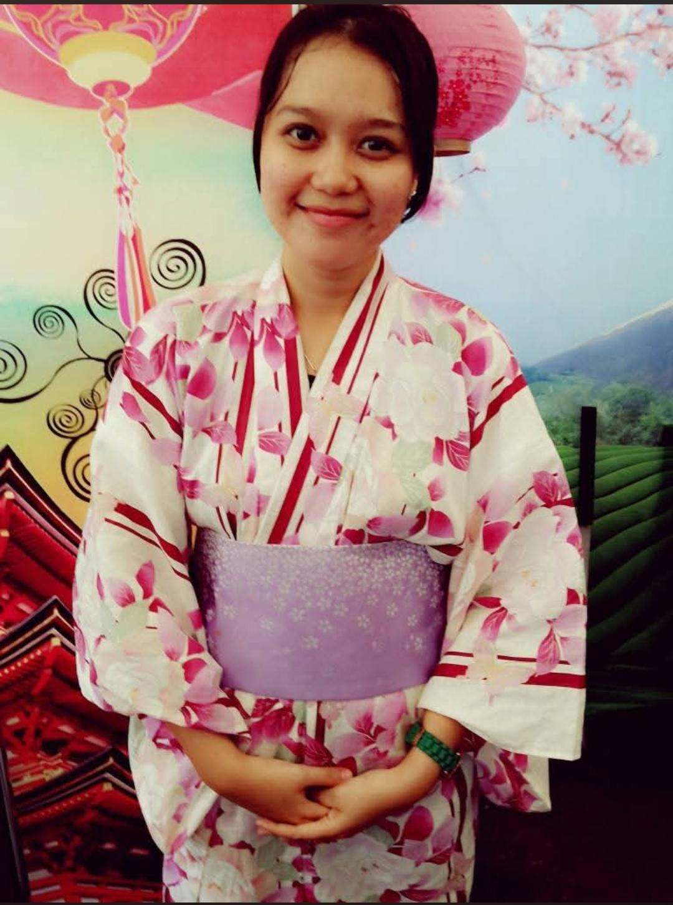

LAHIR18.09.1989
Serang, Banten
日本語教師 / KYŌSHI
学ぶ。教える。成長する。
Guru Bahasa Jepang yang percaya bahwa pendidikan bukan hanya tentang pencapaian, tetapi juga tentang karakter dan keberanian untuk terus bertumbuh.

PROFILE / 私について
ABOUTTHE PERSON
Mengajar bukan sekadar menyampaikan materi. Bagi Septi, ruang kelas adalah tempat untuk membangun rasa ingin tahu, disiplin, dan budi pekerti bersama.
Serang, Banten
Pilihan B
Mengajar di SMKN 1 Kota Serang sejak 2011
JOURNEY / 道のり
15 YEARSPerjalanan pendidikan dibangun dari konsistensi: hadir, mengajar, belajar kembali, lalu meneruskannya kepada generasi berikutnya.
THE BEGINNING
Memulai perjalanan mengajar dan membagikan ilmu dengan semangat yang berangkat dari cita-cita.
CONSISTENCY
Terus mendampingi proses belajar, memberikan ilmu, dan membangun karakter melalui pengalaman sehari-hari.
NEXT CHAPTER
Menjaga rasa ingin tahu, memperkuat nilai, dan membuka ruang untuk generasi berikutnya.
PERSONAL / 好きなこと
OFF CLASSBEYOND THE CLASSROOM
Nonton film Dracin / Drakor.
Adventure, romance, dan romcom.
Rekreasi dan waktu berkualitas bersama keluarga.
VALUES / 価値観
PRINCIPLESMOTTO / 座右の銘
“Berikan yang terbaik dalam hidupmu.”01 / DAILY PRINCIPLE
REMINDER / 心構え
“Wujudkan mimpimu dan jangan mudah menyerah.”02 / KEEP MOVING
CHARACTER / 人格
CLOSING / 終わりに
よろしく
お願いします